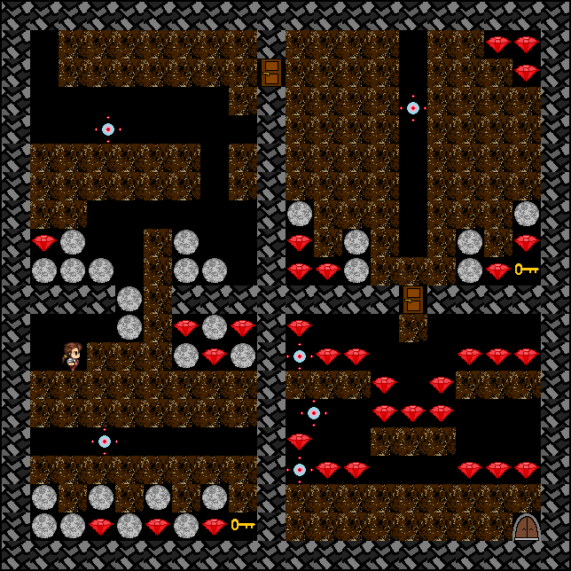

Well met!
This Website serves as an index for some of my personal projects.
Personal Projects
TwitchPlayzHS

TwitchPlayzHS (formerly MixerPlaysHS) was an interactive livestream experiment, which allowed viewers on twitch.tv to play Hearthstone together on stream. Mouse input was collected from viewers using the brand new Twitch Extension system. The extension "Screen Controls" was developed by myself and used as stream overlay. Mouse input was send to my Amazon Web Server, which evaluated inputs (sorting out invalid inputs and calculating the user action with the most agreement each time step). The resulting action for each time step was send to my streaming PC, which automatically executed the action. Using Mixer Interactive we also initially had one click buttons for emotes, but moved over to twitch.tv due to insufficient amount of viewers. Unfortunately I didn't save the peak gameplay with over 50 concurrent players. Currently there only exists one gameplay video here. I might start the bot again, if either Twitch lowers stream delay, or if Mixer makes their FTL protocol more reliable for lower bandwidths.

Accelerator VR
Accelerator VR is a real-time 3D game for the Oculus Rift. It relies solely on headtracking as its primary control scheme. The game has been developed using the Developer Kit 2 (DK2), however it is assumed to also work on the consumer version. Download Link.
I Wanna Be The Bachelor

I Wanna Be The Bachelor is a fangame to I Wanna Be The Guy.
Instead of using one of the several GameMaker Engines provided
by the community, I made my own little “engine”, building on the Quintus JavaScript HTML5 Game Engine and
using Tiled Map Editor. It features 30 levels, including 2 original bosses and tons of deaths.
Initially I used a basic account system and a MySQL-database, so I could store player progress server-side.
Since Github doesn't provide that functionality it is currently not possible to save your progress (sorry). You can play the game directly in your browser here, or watch me
play it in my Personal Playthrough. I do not claim any
copyright for the songs used in this game, so make sure to check out the
credits.
Team Projects
Lecturattack

Lecturattack is a satire about the daily life at DHBW Mannheim, where you play as your favorite professors.
Your goal is to exmatriculate all students, using each professors characteristic abilities. It features
“realistic” graphics and an original soundtrack. You can check out our
GitHub repository or
directly download
the game.

Ruby Mines

Ruby Mines is a remake of the Emerald Mine series. Your goal is to collect all rubies and make it to the
exit alive, but rocks and evil viruses are blocking your way. You can download the game
here.